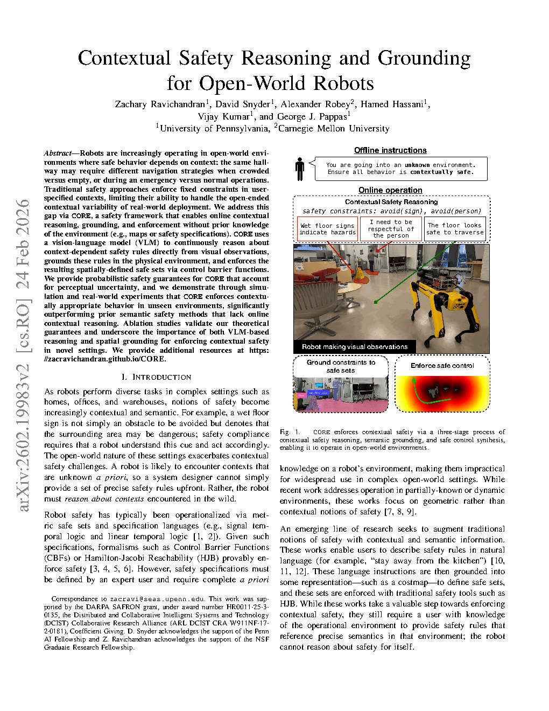
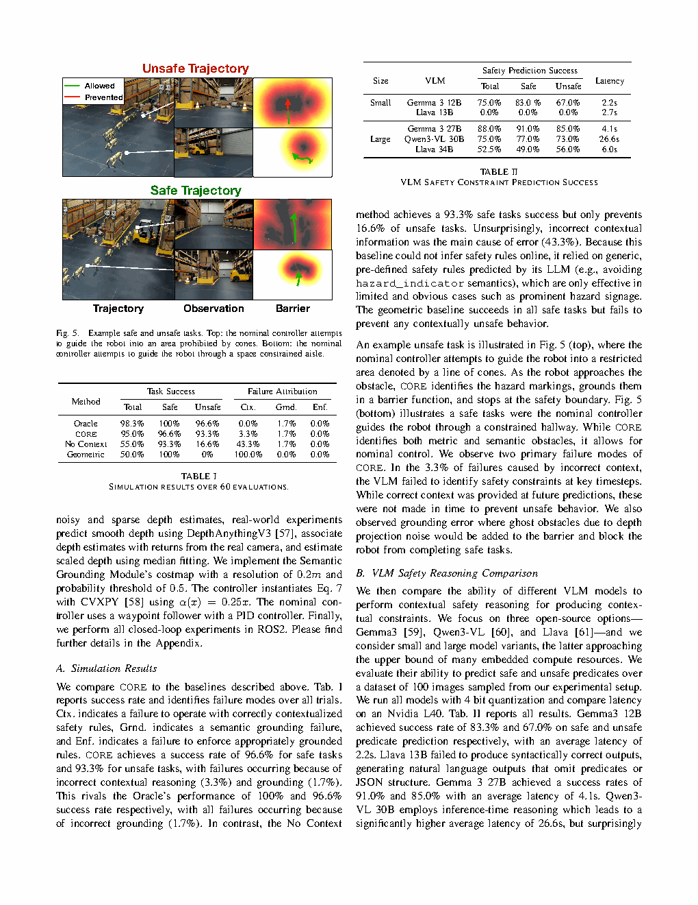

| Title | Contextual Safety Reasoning and Grounding for Open-World Robots |
| Authors | Zachary Ravichandran, David Snyder, Alexander Robey, Hamed Hassani, Vijay Kumar, George J. Pappas |
| Affiliation | University of Pennsylvania GRASP Lab (Ravichandran, Snyder, Hassani, Kumar, Pappas); Carnegie Mellon University (Robey) |
| Venue | arXiv:2602.19983v2, February 2026 |
| DOI / Links | Project: zacravichandran.github.io/CORE | Funding: DARPA SAFRON + ARL DCIST CRA + NSF GRFP |
| TL;DR | CORE 是一个安全框架，使机器人能够在无环境先验知识的情况下，进行在线上下文推理、语义接地和安全约束执行。系统利用 VLM 从视觉观测中推理上下文相关的安全规则，通过开放词汇分割和深度投影将其接地到物理环境，并通过 Control Barrier Functions (CBF) 在感知不确定性下提供概率安全保证。在仿真和真实世界（Boston Dynamics Spot）实验中，CORE 阻止不安全规划的效果比缺乏上下文推理的基线方法高出近 5 倍，不安全任务成功率达到 93.3%，而具备完全先验知识的 Oracle 为 96.6%。 |
| 灵感来源 | 启发了什么洞察 | 类型 |
|---|---|---|
| VLM 的开放词汇理解能力（Gemma 3, SAM3） | VLM 能够理解物体在上下文中的"安全含义"——"小心地滑"标志不仅是一个标志，而是周围区域存在危险的信号。VLM 成为一个在线安全推理模块，而非仅仅是感知模块。 | 架构 |
| Control Barrier Function (CBF) 前向不变性理论 | CBF 仅需要动力学模型和障碍函数即可保证安全，与规划器/控制器解耦。传统 CBF 使用固定的障碍函数——CORE 使其从感知中在线构建，并具有概率安全保证。 | 方法 |
| 语义推理与接地的分离 | 将"推理"（VLM）与"接地"（分割 + 点云投影 + 网格地图）解耦。VLM 输出语义约束；接地模块将其转换为空间安全集合。这种分离使 VLM 专注于推理，而接地模块专注于空间精度。 | 策略 |
| 检测概率函数 m(delta x) 与 Ville 不等式 | 借鉴随机安全分析的方法，通过检测概率函数建模 VLM 感知不确定性，再利用非负上鞅推导概率轨迹长度安全保证——以概率意义上确保机器人不进入未检测到的危险区域。 | 数学 |
flowchart TB
subgraph INPUT["Input Layer"]
I_t["Visual Observation I_t (RGB-D Camera)"]
G["High-Level Safety Guide G (e.g., follow pedestrian social norms)"]
NOM["Nominal Controller u_nom (potentially unsafe)"]
end
subgraph REASON["Stage 1: Contextual Safety Reasoning (VLM)"]
VLM["Gemma 3 27B (4-bit quantized)"]
COT["Chain-of-Thought Reasoning + Structured Output"]
PRED["Safety Predicates: P_safe + P_unsafe"]
SAFE["ON(floor), NEAR(person)"]
UNSAFE["AROUND(wet_floor_sign), BETWEEN(cones)"]
end
subgraph GROUND["Stage 2: Semantic Grounding (Semantic-to-Spatial)"]
SEG["SAM3 Open-Vocabulary Segmentation"]
PIXEL["Pixel Safe Set: I_safe = (union of I_j) minus (union of I_k)"]
PROJ["Depth Projection to 3D Point Cloud then 2D Grid Map"]
GRID["Grid Counts: n_safe / n_unsafe gives P[x is safe]"]
SDF["SDF Barrier Function: h(x) = min dist if x in S else -min dist"]
end
subgraph ENFORCE["Stage 3: CBF Safety Enforcement"]
CBF["CBF Condition: inner product of gradient h, f+gu at least -alpha(h)"]
QP["QP Optimization: u_safe = argmin ||u - u_nom||^2 subject to CBF"]
SAFE_U["Safe Control Input u_safe"]
end
subgraph UNCERTAINTY["Perception Uncertainty Modeling"]
M_FUNC["Detection Function m(delta x): R^3 to [0,1]"]
THM["Theorem 1: P[exists t: x_t not in S] at most delta, Probabilistic Safety Guarantee"]
end
I_t --> VLM --> COT --> PRED
G --> VLM
PRED --> SAFE
PRED --> UNSAFE
SAFE --> SEG
UNSAFE --> SEG
SEG --> PIXEL --> PROJ --> GRID --> SDF
SDF --> CBF
CBF --> QP
NOM --> QP
QP --> SAFE_U
SDF -.->|"Uncertainty Analysis"| M_FUNC --> THM
THM -.->|"Safety Guarantee Feedback"| QP
classDef input fill:#fef7ed,stroke:#f59e0b,stroke-width:2px,color:#92400e
classDef reason fill:#f0ebfd,stroke:#8b5cf6,stroke-width:2px,color:#6d28d9
classDef ground fill:#e8f0fe,stroke:#3b82f6,stroke-width:2px,color:#1d4ed8
classDef enforce fill:#e6f7ee,stroke:#10b981,stroke-width:2px,color:#047857
classDef uncert fill:#ffe4e6,stroke:#f43f5e,stroke-width:2px,color:#be123c
classDef result fill:#dbeafe,stroke:#2563eb,stroke-width:2px,color:#1e40af
class I_t,G,NOM input
class VLM,COT,PRED,SAFE,UNSAFE reason
class SEG,PIXEL,PROJ,GRID,SDF ground
class CBF,QP enforce
class M_FUNC,THM uncert
class SAFE_U result
flowchart TB
subgraph PERCEPTION["Perception Pipeline"]
direction LR
CAM["RGB-D Camera"] --> SEG2["SAM3 Segmentation"] --> DEPTH["Depth Map Registration"]
end
subgraph VLM_PIPE["VLM Reasoning Pipeline"]
direction LR
IMG["Current Frame Image"] --> VLM2["Gemma 3 27B (4-bit, ~4.1s latency)"]
VLM2 --> JSON["JSON Output: safety_logic + classes + safe/unsafe predicates"]
end
subgraph GROUND_PIPE["Semantic Grounding Pipeline"]
direction LR
JSON --> SEG_MATCH["Segmentation Mask Matching to Semantic Classes"]
SEG_MATCH --> IMG_SPACE["Image-Space Safe Set I_safe"]
IMG_SPACE --> PCLOUD["Depth Projection to 3D Point Cloud"]
PCLOUD --> COSTMAP["2D Grid Map (0.2m resolution)"]
COSTMAP --> PROB["Probability Estimate: P[x is safe] = n_safe/(n_safe+n_unsafe)"]
end
subgraph CONTROL["Control Pipeline"]
direction LR
PROB --> THRESH["Threshold tau=0.5 to Safe Set S"]
THRESH --> BARRIER["Barrier Function h(x) via SDF"]
BARRIER --> QP2["QP Solver (CVXPY), alpha(x)=0.25x"]
QP2 --> CMD["Safe Control Command to Actuators"]
end
subgraph FEEDBACK["Online Feedback"]
direction LR
CMD --> ROBOT["Robot Executes Action"]
ROBOT --> OBS["New Observation, Grid Update"]
OBS --> MAP["Incremental Safety Map Update"]
MAP --> BARRIER
end
PERCEPTION --> VLM_PIPE --> GROUND_PIPE --> CONTROL
CONTROL --> FEEDBACK
classDef perce fill:#fef7ed,stroke:#f59e0b,stroke-width:2px
classDef vlm fill:#f0ebfd,stroke:#8b5cf6,stroke-width:2px
classDef grnd fill:#e8f0fe,stroke:#3b82f6,stroke-width:2px
classDef ctrl fill:#e6f7ee,stroke:#10b981,stroke-width:2px
classDef feed fill:#ffe4e6,stroke:#f43f5e,stroke-width:2px
class CAM,SEG2,DEPTH perce
class IMG,VLM2,JSON vlm
class SEG_MATCH,IMG_SPACE,PCLOUD,COSTMAP,PROB grnd
class THRESH,BARRIER,QP2,CMD ctrl
class ROBOT,OBS,MAP feed
flowchart TD
subgraph OFFLINE["Offline Preparation"]
direction LR
O1["Define Spatial Operators: ON, NEAR, AROUND, BETWEEN"] --> O2["Craft VLM System Prompt with Safety Logic + CoT Instructions"]
O2 --> O3["Configure High-Level Safety Guide G and Nominal Controller"]
end
subgraph ONLINE["Online Reasoning Loop"]
direction LR
N1["At time t: Acquire RGB-D Observation I_t"] --> N2["VLM Reasoning: Generate Safety Predicates {s_1,...,s_K}"]
N2 --> N3["Semantic Segmentation: SAM3 Localizes Semantic Classes"]
N3 --> N4["Construct Image-Space Safe Set (Eq.2)"]
N4 --> N5["Depth Projection + Grid Accumulation (Eq.3)"]
N5 --> N6["Construct SDF Barrier Function (Eq.4)"]
N6 --> N7["Solve CBF-QP (Eq.7)"]
N7 --> N8["Execute u_safe, Robot Moves"]
end
subgraph UPDATE["State Update"]
direction LR
U1["New Observation Arrives, Update Grid Counts"] --> U2{"h(x) at least 0? Is current state safe?"}
U2 -->|"Yes"| U3["Continue Execution (Assumption 1: no instantaneous unsafe transition)"]
U2 -->|"No"| U4["Emergency Stop, Trigger Safety Intervention"]
U3 --> U5["VLM Periodic Re-Reasoning (new viewpoint / new scene)"]
end
subgraph GUARANTEE["Safety Guarantee"]
direction LR
TH1["Theorem 1: If k*(t) observation conditions hold"]
TH2["Then P[trajectory leaves S] at most delta=0.1"]
TH3["Empirical: 93.3% unsafe-task success rate"]
end
OFFLINE --> ONLINE --> UPDATE
UPDATE --> GUARANTEE
classDef offline fill:#fef7ed,stroke:#f59e0b,stroke-width:2px
classDef online fill:#e8f0fe,stroke:#3b82f6,stroke-width:2px
classDef update fill:#f0ebfd,stroke:#8b5cf6,stroke-width:2px
classDef guarantee fill:#e6f7ee,stroke:#10b981,stroke-width:2px
class O1,O2,O3 offline
class N1,N2,N3,N4,N5,N6,N7,N8 online
class U1,U2,U3,U4,U5 update
class TH1,TH2,TH3 guarantee
| 类别 | 内容 | 维度 |
|---|---|---|
| 输入 | RGB-D 相机流 + 里程计 + 高层安全指南 G | 图像帧序列、深度图、机器人位姿 |
| 输出 | 安全控制输入 u_safe，最小化与名义控制的偏差 | 线速度、偏航角速度（3-DOF 控制） |
| 目标 | 在未知环境中实现上下文安全导航：理解场景语义、推理安全约束、执行安全控制 | 仿真成功率 95%（不安全任务 93.3%） |
这是一个感知-推理-控制融合的系统级安全框架，核心任务类型为上下文安全导航。具体场景包括：(1) 上下文缓冲区——识别隐式危险物体（如仓库中的叉车）并在其周围保持安全距离；(2) 上下文屏障——识别由物体排列形成的禁行区域（如交通锥排列成一条线），将其理解为禁行区而非独立障碍物；(3) 上下文自适应通行——区分可通行与不可通行表面（人行道 vs. 草地），尽管两者物理上均可通行。平台：移动机器人（仿真中为差速驱动，真实世界为 Boston Dynamics Spot）；场景：仓库、医院、户外住宅区。
| 前人方法 | 核心思想 | 失败原因 |
|---|---|---|
| 传统 CBF / HJ Reachability | 使用已知障碍函数强制执行前向不变性，确保系统永远不会离开安全集合 | 需要预先已知且固定的障碍函数。在开放世界中，安全约束随上下文变化——传统方法无法在线推理或修改障碍函数。 |
| 语言条件安全 | 用户用自然语言描述安全规则（如"远离厨房"），系统将语言指令接地到代价地图或安全集合 | 仍然需要用户预先提供环境特定的自然语言安全规则。不适用于未知环境——机器人无法在无用户输入的情况下自主推理安全。 |
| LLM 规划 + 验证 | 使用 LLM 生成任务规划，然后形式化验证规划安全性 | 验证检查的是离散动作序列，而非连续状态的动态安全约束。无法处理感知层面的安全——如果危险未被预编码到世界模型中，验证对其视而不见。 |
| 纯几何安全（避障） | 基于深度/LiDAR 的障碍物检测与避让 | 无法区分"需要避开的障碍物"和"不需要避开的物体"——花盆和"小心地滑"标志在几何流水线中看起来完全一样。完全缺乏语义理解，无法执行上下文敏感的安全行为。 |
CORE 是一个三阶段感知-推理-控制系统。阶段 1（上下文安全推理）使用 VLM 从图像中推理安全谓词；阶段 2（语义接地）将谓词转化为基于网格计数的概率安全集合和符号距离场障碍函数；阶段 3（CBF 安全执行）通过 QP 优化合成最小干预安全控制，并提供理论概率安全保证。
| 参数 | 取值 | 含义 | 理由 |
|---|---|---|---|
| VLM 模型 | Gemma 3 27B (4-bit 量化) | 上下文安全推理引擎 | 安全/不安全谓词准确率最优 91.0%/85.0%，延迟可接受（4.1s）。Gemma 3 12B 降至 83.3%/67.0%；Llava 34B 仅 49.0%/56.0% |
| 分割模型 | SAM3 | 开放词汇语义分割 | SAM3 支持开放词汇物体检测，使接地模块能精确定位 VLM 识别的任意语义类别 |
| 网格分辨率 | 0.2 m | 2D 网格地图单元大小 | 平衡空间精度和计算效率。更细的网格边界更精确但需要更多观测填充 |
| 概率阈值 tau | 0.5 | 将网格单元分类为安全/不安全 | 当安全点计数超过不安全计数时，单元被视为安全 |
| CBF alpha 函数 | alpha(x) = 0.25x | 障碍函数保守程度 | 较小的 alpha 放宽 CBF 约束（允许更接近边界）；较大的更保守。0.25 平衡安全性与任务完成度 |
| 安全保证 delta | 0.1 | 概率安全保证水平 | 保证 90% 的轨迹不离开安全集合；经验验证约 93% |
| 空间算子 | ON, NEAR, AROUND, BETWEEN | 构建安全谓词的四种空间操作 | 覆盖主要上下文安全场景：可通行表面（ON）、碰撞风险（NEAR）、周边危险（AROUND）、物体排列障碍（BETWEEN） |
CBF 根植于集合不变性的Nagumo 定理。对于控制仿射系统 $\dot{x} = f(x) + g(x)u$，如果存在扩展 class-$\mathcal{K}$ 函数 $\alpha$，使得对所有 $x$ 满足 $\sup_u [\nabla h(x)^T (f(x)+g(x)u)] \ge -\alpha(h(x))$，则连续可微函数 $h: \mathbb{R}^n \to \mathbb{R}$ 是安全集合 $S = \{x \mid h(x) \ge 0\}$ 的 CBF。该不等式确保当 $h(x)$ 趋近零时，控制总能将系统推回内部，保证 $S$ 的前向不变性。CORE 通过从 VLM 推导的安全语义在线构建 $h(x)$，而非假设预设计的障碍函数，从而适配了这一原理。关键洞察在于CBF 条件可以作为二次规划中的线性约束执行，计算高效（通过 CVXPY 在毫秒级求解），同时在 $h$ 正确时保持形式化前向不变性。
符号距离场 $h(x)$ 将每个点映射到其到安全集合 $S$ 边界的带符号欧几里得距离：$S$ 内部为正，外部为负。SDF 具有Eikonal 性质 $\|\nabla h(x)\| = 1$（几乎处处），确保 CBF 梯度约束具有均匀缩放，对 QP 求解器条件良好。在 CORE 中，SDF 并非解析计算，而是通过 2D 占用网格上的网格查找近似——对每个单元，通过欧几里得距离变换找到最近的边界单元，产生高效的 $O(N)$ 计算（$N$ 为网格单元数）。梯度 $\nabla h(x)$ 近似为从当前位置到最近边界点 $y^*(x)$ 的归一化向量，当安全集合边界可微时是精确的。
接地流水线依赖两个支柱。第一，SAM3（Segment Anything Model 3）提供类别无关的分割，当用 VLM 识别的语义标签提示时，无需重新训练即可定位任意物体类别。这一点至关重要，因为 CORE 无法预知开放世界中会出现哪些语义类别。第二，深度投影 + 网格投票机制将 2D 像素分类转化为 3D 概率占用表示。每个具有深度 $d$ 的像素被反投影到 3D 点并分配到对应的 2D 网格单元。跨多帧，每个单元累积计数 $n_{ij}^{\text{safe}}$ 和 $n_{ij}^{\text{unsafe}}$，实现了一种贝叶斯占用滤波：$P[\text{单元 } (i,j) \text{ 安全}] = n_{ij}^{\text{safe}} / (n_{ij}^{\text{safe}} + n_{ij}^{\text{unsafe}})$。该投票机制通过要求多个观测的一致共识来自然处理分割噪声。
CORE 的定理 1 提供了根植于非负上鞅Ville 不等式的概率安全保证。随机过程 $M_t$ 是上鞅，如果 $\mathbb{E}[M_{t+1} \mid \mathcal{F}_t] \le M_t$，其中 $\mathcal{F}_t$ 是滤波（历史信息）。关键构造是基于 $d^{-1}(r_t; c, \ell) = c/(r_t + \ell)$ 定义的过程，其中 $r_t$ 是到最近未检测到的不安全区域的距离。在检测概率函数 $m(\delta x)$ 的适当条件下，该过程是非负上鞅。Ville 不等式随即界定该过程的上确界超过阈值的概率，转化为：机器人曾经进入未检测到的不安全区域的概率至多为 $\delta$。两阶段分解（最坏情况风险分配 $\gamma$ + 保守 $m(\cdot)$）使该界在实践中可用，尽管鞅不等式本身具有保守性。检测函数 $m(\delta x)$ 捕获了 VLM 感知质量的空间依赖性——更远或倾斜角度下的物体更难检测，这一点被显式建模而非简单假设掉。
VLM 被提示以安全逻辑指令，强制采用结构化推理流水线：(1) 枚举所有可观测实体，(2) 将每个实体分类为安全相关或中性，(3) 分配适当的空间算子（ON/NEAR/AROUND/BETWEEN），(4) 用自然语言为每个分类提供理由，(5) 输出带有安全和不安全谓词列表的最终 JSON。这种结构化 CoT 方法将 VLM 从"黑盒分类器"转变为透明的安全推理器，其中间步骤可被审查。消融研究（移除 CoT 使安全谓词准确率从 91% 降至 61%）经验性验证了显式推理步骤是必要的——VLM 无法在无中间推理的情况下可靠地从原始像素跳到安全谓词。这一原则可推广到 CORE 之外：任何安全关键的 LLM/VLM 应用都应强制执行结构化、可审计的推理轨迹，而非信任端到端黑盒输出。
CORE 的架构体现了跨三个独立模块的关注点分离系统原则。VLM 推理模块处理语义理解（物体对安全意味着什么），但不处理空间精度。接地模块处理空间准确性（安全/不安全区域在度量空间中的位置），但不处理语义解释。CBF 执行模块处理动态安全（给定机器人动力学如何保持安全），但不处理感知。每个模块可独立改进、测试和替换：更好的 VLM 改善推理而不触及接地；更好的深度传感器改善接地而无需重新训练 VLM；不同的 CBF 公式改善执行而不影响感知。这种模块化对于安全关键系统至关重要，因为故障必须可追溯到特定组件。
| 方法 | 总体成功率 | 安全任务 | 不安全任务 | 上下文错误 | 接地错误 | 执行错误 |
|---|---|---|---|---|---|---|
| Oracle | 98.3% | 100% | 96.6% | 0.0% | 1.7% | 0.0% |
| CORE（本文） | 95.0% | 96.6% | 93.3% | 3.3% | 1.7% | 0.0% |
| No Context | 55.0% | 93.3% | 16.6% | 43.3% | 1.7% | 0.0% |
| Geometric | 50.0% | 100% | 0% | 100.0% | 0.0% | 0.0% |
60 次评估（3 种环境 x 4 个任务 x 5 次重复）。CORE 的不安全任务成功率（93.3%）接近 Oracle（96.6%），而 No Context 仅为 16.6%，Geometric 为 0%。几何基线在安全任务上达到 100% 但在不安全任务上完全失败——它无法识别上下文危险。
| VLM 模型 | 安全谓词准确率 | 不安全谓词准确率 | 平均延迟 |
|---|---|---|---|
| Gemma 3 27B（CORE 使用） | 91.0% | 85.0% | 4.1s |
| Gemma 3 12B | 83.3% | 67.0% | 2.2s |
| Qwen3-VL 30B | 77.0% | 73.0% | 26.6s |
| Llava 13B | 无法生成语法正确的输出 | ||
| Llava 34B | 49.0% | 56.0% | 6.0s |
| 配置 | 安全准确率 | 不安全准确率 | 延迟 |
|---|---|---|---|
| 完整 CORE | 91.0% | 85.0% | 4.1s |
| 无安全逻辑（移除 safety logic instruction） | 90.0% | 80.0% | 4.1s |
| 无 CoT 推理（移除 chain-of-thought） | 61.0% | 77.0% | 2.8s |
移除 CoT 推理使安全准确率从 91.0% 骤降至 61.0%——显式推理对正确识别安全区域至关重要（而非直接跳到结论）。移除安全逻辑主要影响不安全区域检测（85.0% 到 80.0%），表明安全逻辑帮助 VLM 识别危险。
| 方法 | 总体成功率 | 安全任务 | 不安全任务 | 上下文错误 | 接地错误 | 执行错误 |
|---|---|---|---|---|---|---|
| CORE | 86.6% | 86.6% | 86.6% | 3.9% | 9.0% | 0.0% |
| Geometric | 50.0% | 100% | 0.0% | 100.0% | 0.0% | 0.0% |
真实世界 CORE 成功率（86.6%）低于仿真（95.0%），错误主要增加在接地方面（9.0% vs. 1.7%）——真实世界深度噪声和分割不准确性导致更高的接地失败率。值得注意的是，上下文推理错误在真实世界设置中保持较低水平（3.9%）。

Please save screenshot asfigures/fig1.png本图展示了 CORE 的完整工作流程。在离线配置阶段，提供高层安全指南（如"确保所有行为在上下文上是安全的"）。在线运行期间，机器人通过三个阶段实现安全：(1) VLM 从视觉观测中推理上下文安全约束（如"'小心地滑'标志表示需要谨慎，尊重行人"）；(2) 这些约束被接地到安全集合（如 ON(floor) 为安全，AROUND(person) 为不安全）；(3) CBF 强制执行安全控制。

Please save screenshot asfigures/fig5.png不安全任务：名义控制器引导机器人穿过一排交通锥。CORE 识别危险标记（锥桶），将其接地为 BETWEEN(cones) 障碍函数，并在安全边界处停止机器人。安全任务：名义控制器引导机器人穿过拥挤走廊。CORE 同时识别度量和语义障碍，但允许名义控制通过安全区域。
| 数据问题 | 潜在困难 | 严重程度 |
|---|---|---|
| VLM 假阴性（漏检危险） | 如果 VLM 在关键时刻未能识别危险标记（如停止场景），CBF 障碍函数将无法阻止机器人进入危险区域——这是最严重的安全失败模式。占仿真失败的 3.3% | 严重 |
| 分割/接地噪声 | 深度估计噪声产生"幽灵障碍物"——在网格中错误标记安全/不安全区域。过度保守可能导致安全任务失败（阻塞合法路径）；过度激进可能导致不安全任务失败（遗漏真实危险） | 高 |
| 光照/视角变化 | VLM 推理质量严重依赖图像质量。低光照、遮挡和不寻常视角可能导致推理失败。论文未系统测试不同光照条件下的性能 | 中 |
| 网格分辨率敏感性 | 0.2m 网格分辨率对室内环境可能太粗（无法捕获精细结构边界），但对大规模室外场景可能太细（计算和内存负担） | 低 |
| 参考文献 | 为什么重要 |
|---|---|
| Ravichandran et al. (2026) -- Safety guardrails for LLM-enabled robots. IEEE RAL | 同组工作——ROBOGUARD 使用 root-of-trust LLM 执行 LLM 规划的安全。CORE 和 ROBOGUARD 互补：ROBOGUARD 侧重对抗安全（防 jailbreaking），CORE 侧重上下文安全（环境理解） |
| Robey et al. (2025) -- Jailbreaking LLM-controlled robots. ICRA | ROBOPAIR 攻击——展示了 LLM 驱动机器人的巨大安全漏洞（92.3% 攻击成功率）。CORE 部分继承了 ROBOGUARD 对此问题的应对，但 CORE 的方法是通过在线感知而非形式化验证 |
| Brunke et al. (2025) -- Semantically safe robot manipulation. IEEE RAL | 近期语义安全操作工作——从场景理解到运动安全防护。CORE 在此之上增加了"在线推理"——不再需要预先存在的场景理解 |
| Cosner et al. (2023) -- Robust safety under stochastic uncertainty with discrete-time CBFs. arXiv | CORE 的概率安全保证定理在数学上借鉴了此工作的方法——非负上鞅和 Ville 不等式。但 CORE 将"动力学不确定性"替换为"感知不确定性"，是一个重要的视角转换 |